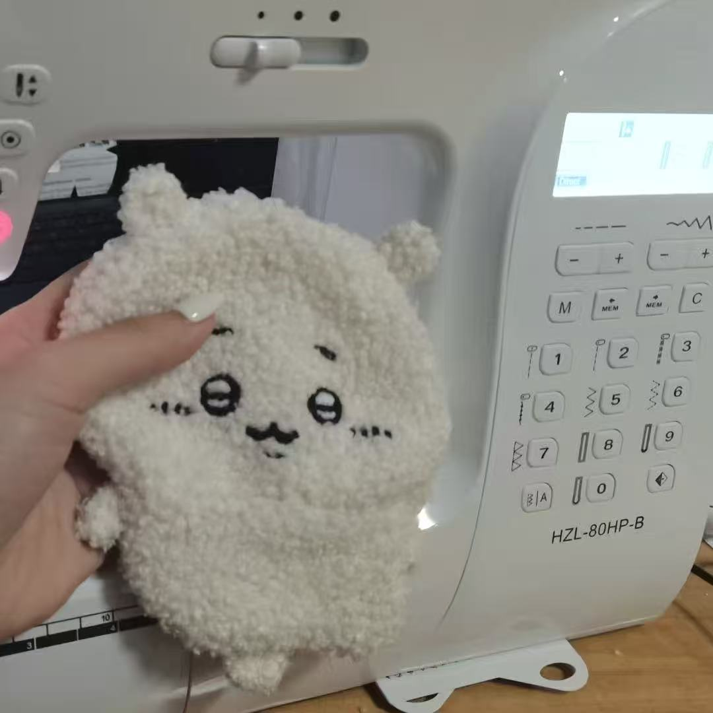

Observe
Good work begins with noticing how materials, shapes, and people interact.
Life
Outside research and engineering, I enjoy sewing. It gives me a different rhythm: choose the fabric, understand the structure, work patiently, and turn a flat piece of material into something useful and personal.

A Practice in Patience
Sewing combines precision with creativity. Measuring, cutting, and stitching reward careful attention, while every fabric and pattern leaves room for experimentation. I like the quiet satisfaction of improving a small detail and eventually holding a finished piece in my hands.
Good work begins with noticing how materials, shapes, and people interact.
I enjoy moving from an idea to a physical result through steady, hands-on work.
Each project teaches me to accept imperfect first attempts and refine them with care.
“Sewing reminds me that progress is made stitch by stitch—small, deliberate steps that eventually become a whole.”